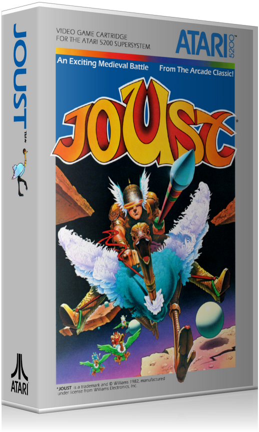

Joust
En Joust, los jugadores asumen el papel de un caballero montado en un avestruz volador, compitiendo en intensos combates aéreos en plataformas flotantes. El objetivo es derrotar a los jinetes enemigos, golpeándolos desde arriba para eliminarlos antes de que ellos hagan lo mismo. A medida que avanza el juego, la dificultad aumenta con oleadas más agresivas y la aparición del temido Pterodáctilo. Con su innovadora mecánica de vuelo y acción frenética, Joust se convirtió en un clásico de los juegos de arcade y Atari 2600.
- Fly (Vuelo controlado)
- Lava (Peligro en la parte baja)
- Egg (Huevos que renacen como enemigos)
- PvP (Modo para dos jugadores)
- Jump (Salto con mecánica de flotar)
- Bird (Aves como montura)
Precio: $24.990
Comprar